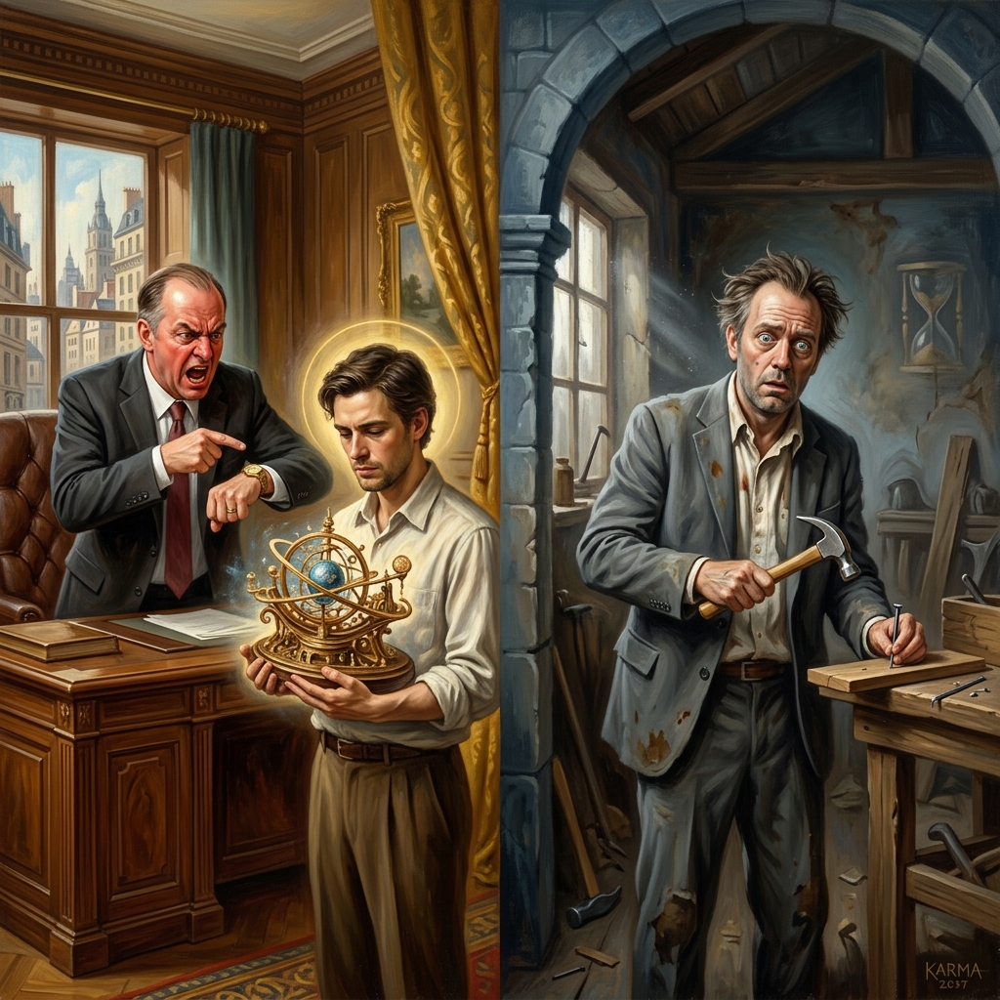
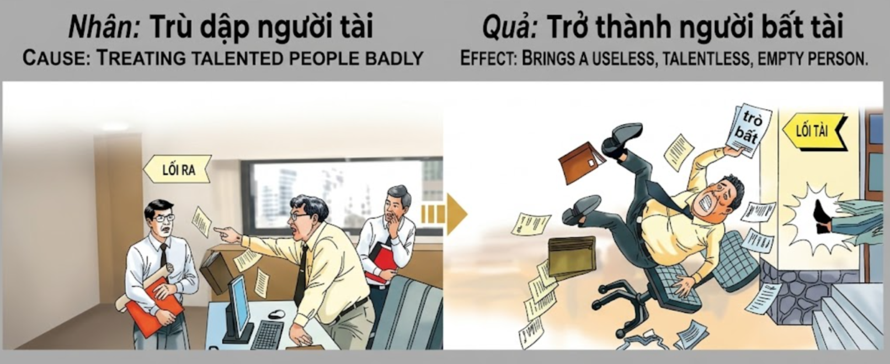

El Precio de Reprimir el TalentoThe Price of Suppressing TalentIl Prezzo di Reprimere il Talento压制人才的代价ثمن قمع الموهبةЦена подавления талантаDer Preis für die Unterdrückung von TalentenLe prix de la répression du talent才能を抑圧する代償O Preço de Reprimir o TalentoCái Giá Của Việc Trù Dập Người Tài
Quien por envidia u orgullo obstaculiza el camino de los talentosos, renace despojado de sus propias capacidades, convertido en una sombra vacía de intelecto y habilidad.He who out of envy or pride hinders the path of the talented, is reborn stripped of his own abilities, turned into an empty shadow of intellect and skill.Chi per invidia o orgoglio ostacola il cammino dei talentuosi, rinasce privato delle proprie capacità, trasformato in un'ombra vuota di intelletto e abilità.出于嫉妒或骄傲而阻碍人才道路的人，重生时将被剥夺自己的才能，变成智慧和技巧的虚空阴影。من يعيق طريق الموهوبين بدافع الحسد أو الكبرياء، يولد من جديد مجرداً من قدراته الخاصة، ويتحول إلى ظل فارغ من الفكر والمهارة.Тот, кто из зависти или гордости препятствует пути талантливых, возрождается лишенным собственных способностей, превращаясь в пустую тень интеллекта и мастерства.Wer aus Neid oder Stolz den Weg der Talentierten behindert, wird seiner eigenen Fähigkeiten beraubt wiedergeboren und zu einem leeren Schatten von Intellekt und Können.Celui qui, par envie ou par orgueil, entrave le chemin des talentueux, renaît dépouillé de ses propres capacités, transformé en une ombre vide d'intellect et de compétence.嫉妬やプライドから才能ある者の道を妨げる者は、自らの能力を奪われて生まれ変わり、知性と技能の空虚な影へと変貌します。Aquele que por inveja ou orgulho dificulta o caminho dos talentosos, renasce despojado das suas próprias capacidades, transformado numa sombra vazia de intelecto e habilidade.Kẻ nào vì đố kỵ hay kiêu ngạo mà cản trở bước đường của người tài, sẽ tái sinh trong tình trạng mất đi năng lực của chính mình, trở thành một cái bóng trống rỗng về trí tuệ và kỹ năng.
La envidia es un ácido que corroe la propia grandeza. En el entramado social, existen aquellos que, temiendo ser eclipsados, utilizan su autoridad para apagar el fuego de los brillantes. Reprimir el talento ajeno, robar méritos o enterrar las ideas de los demás no es solo una injusticia laboral o civil, sino un suicidio kármico del propio genio.
La ley del karma establece que lo que negamos al mundo nos será negado a nosotros. Al cerrar las puertas a los hombres de valía, estamos cerrando las puertas de nuestra propia capacidad futura. El universo, al ver que hemos usado nuestro poder para destruir la excelencia en lugar de fomentarla, retira de nuestra alma el don de la inspiración y la destreza. La mediocridad impuesta a otros se convierte en nuestra propia prisión mental.
Al renacer, estas almas regresan desorientadas. Por mucho que se esfuercen, las tareas más simples les resultan imposibles. La claridad que antes tenían se ha desvanecido, y donde antes hubo astucia ahora hay confusión. Quien fue el verdugo de los talentosos hoy mendiga un poco de entendimiento, pagando la deuda de haber intentado apagar la luz de quienes solo querían iluminar el camino de todos.
Envy is an acid that corrodes one's own greatness. Within the social fabric, there are those who, fearing to be eclipsed, use their authority to extinguish the fire of the brilliant. Suppressing the talent of others, stealing merits, or burying the ideas of others is not just a labor or civil injustice, but a karmic suicide of one's own genius.
The law of karma establishes that what we deny to the world will be denied to us. By closing doors to men of worth, we are closing the doors of our own future capacity. The universe, seeing that we have used our power to destroy excellence instead of fostering it, withdraws the gift of inspiration and skill from our soul. The mediocrity imposed on others becomes our own mental prison.
Upon rebirth, these souls return disoriented. No matter how hard they try, the simplest tasks are impossible for them. The clarity they once had has vanished, and where there was once cunning, there is now confusion. He who was the executioner of the talented now begs for a little understanding, paying the debt of having tried to extinguish the light of those who only wanted to illuminate everyone's path.
L'invidia è un acido che corrode la propria grandezza. Nel tessuto sociale, ci sono coloro che, temendo di essere eclissati, usano la loro autorità per spegnere il fuoco dei brillanti. Reprimere il talento altrui, rubare meriti o seppellire le idee degli altri non è solo un'ingiustizia lavorativa o civile, ma un suicidio karmico del proprio genio.
La legge del karma stabilisce che ciò que neghiamo al mondo ci sarà negato. Chiudendo le porte agli uomini di valore, stiamo chiudendo le porte della nostra capacità futura. L'universo, vedendo che abbiamo usato il nostro potere per distruggere l'eccellenza invece di incoraggiarla, ritira dalla nostra anima il dono dell'ispirazione e dell'abilità. La mediocrità imposta agli altri diventa la nostra prigione mentale.
Rinascono, e queste anime tornano disorientate. Per quanto si sforzino, i compiti più semplici risultano loro impossibili. La chiarezza che avevano un tempo è svanita, e dove prima c'era astuzia ora c'è confusione. Chi fu il carnefice dei talentuosi ora mendica un po' di comprensione, pagando il debito di aver cercato di spegnere la luce di chi voleva solo illuminare il cammino di tutti.
嫉妒是腐蚀自身伟大的酸液。在社会结构中，有些人害怕被掩盖光芒，便利用职权熄灭才华横溢者的火焰。压制他人的才华、窃取功劳或埋没他人的想法，不仅是职场或公民的不公，更是自身天赋的业力自杀。
因果法则规定，我们对世界所否定的，也将被对我们否定。通过关闭通往有价值人才的大门，我们也在关闭通往自身未来能力的大门。宇宙看到我们利用权力摧毁卓越而非培养卓越，便从我们的灵魂中收回灵感和技巧的礼物。强加于他人的平庸变成了我们自己的精神监狱。
重生后，这些灵魂回归时感到迷失。无论他们如何努力，最简单的任务对他们来说也是不可能的。他们曾经拥有的清晰已消失，曾经的精明现在变成了混乱。那些曾是人才处刑者的人，现在乞求一点点的理解，为试图熄灭那些只想照亮众人道路者的光芒而偿还债务。
الحسد هو حمض يآكل عظمة المرء. في النسيج الاجتماعي، هناك من يستخدمون سلطتهم، خوفاً من أن يتم حجبهم، لإطفاء نار المتألقين. إن قمع موهبة الآخرين، أو سرقة استحقاقاتهم، أو دفن أفكارهم ليس مجرد ظلم مهني أو مدني، بل هو انتحار كارمي لعبقرية المرء نفسه.
يحدد قانون الكارما أن ما نحرمه من العالم سيُحرم منا. بإغلاق الأبواب أمام ذوي القيمة، نغلق أبواب قدراتنا المستقبلية. الكون، عندما يرى أننا استخدمنا قوتنا لتدمير التميز بدلاً من تعزيزه، يسحب من أرواحنا هبة الإلهام والبراعة. تصبح الرداءة التي فُرضت على الآخرين سجننا الذهني الخاص.
عند الولادة من جديد، تعود هذه الأرواح تائهة. مهما حاولوا جاهدين، فإن أبسط المهام تصبح مستحيلة بالنسبة لهم. لقد تلاشت الوضوح الذي ميزهم يوماً، وحل الارتباك محل الدهاء. من كان جلاد الموهوبين يتسول الآن القليل من الفهم، ويدفع ثمن محاولته إطفاء نور أولئك الذين أرادوا فقط إنارة الطريق للجميع.
Зависть — это кислота, разъедающая собственное величие. В социальной структуре есть те, кто, боясь оказаться в тени, используют свою власть, чтобы погасить пламя одаренных. Подавление чужого таланта, кража заслуг или захоронение идей других — это не просто трудовая или гражданская несправедливость, это кармическое самоубийство собственного гения.
Закон кармы гласит: то, что мы отрицаем миру, будет отрицаться и нам. Закрывая двери перед достойными людьми, мы закрываем двери перед нашими собственными способностями в будущем. Вселенная, видя, что мы использовали свою власть для уничтожения совершенства вместо того, чтобы способствовать ему, лишает нашу душу дара вдохновения и мастерства. Посредственность, навязанная другим, становится нашей собственной ментальной тюрьмой.
Возрождаясь, эти души возвращаются дезориентированными. Как бы они ни старались, самые простые задачи кажутся им невыполнимыми. Ясность, которая была у них когда-то, исчезла, и там, где раньше была хитрость, теперь воцарилось замешательство. Тот, кто был палачом талантливых, теперь выпрашивает крупицу понимания, выплачивая долг за попытку погасить свет тех, кто хотел лишь осветить путь для всех.
Neid ist eine Säure, die die eigene Größe zerfrisst. Im sozialen Gefüge gibt es jene, die aus Angst, in den Schatten gestellt zu werden, ihre Autorität nutzen, um das Feuer der Brillanten auszulöschen. Das Unterdrücken der Talente anderer, das Stehlen von Verdiensten oder das Begraben der Ideen anderer ist nicht nur eine berufliche oder zivilrechtliche Ungerechtigkeit, sondern ein karmischer Selbstmord des eigenen Genies.
Das Gesetz des Karmas besagt, dass das, was wir der Welt verweigern, uns selbst verweigert wird. Indem wir den Türen für wertvolle Menschen schließen, schließen wir die Türen für unsere eigene zukünftige Kapazität. Das Universum entzieht unserer Seele die Gabe der Inspiration und des Geschicks, wenn es sieht, dass wir unsere Macht genutzt haben, um Exzellenz zu zerstören, anstatt sie zu fördern. Die anderen auferlegte Mittelmäßigkeit wird zu unserem eigenen geistigen Gefängnis.
Bei der Wiedergeburt kehren diese Seelen desorientiert zurück. Egal wie sehr sie sich bemühen, die einfachsten Aufgaben fallen ihnen unmöglich. Die Klarheit, die sie einst hatten, ist verschwunden, und wo einst List war, herrscht nun Verwirrung. Wer der Henker der Talentierten war, bettelt heute um ein wenig Verständnis und zahlt die Schuld dafür, dass er versucht hat, das Licht derer auszulöschen, die nur den Weg für alle beleuchten wollten.
L'envie est un acide qui corrode sa propia grandeur. Dans le tissu social, il y a ceux qui, craignant d'être éclipsés, utilisent leur autorité pour éteindre le feu des brillants. Réprimer le talent d'autrui, voler des mérites ou enterrer les idées des autres n'est pas seulement une injustice professionnelle ou civile, mais un suicide karmique de son propre génie.
La loi du karma stipule que ce que nous refusons au monde nous sera refusé. En fermant les portes aux hommes de valeur, nous fermons les portes de notre propre capacité future. L'univers, voyant que nous avons utilisé notre pouvoir pour détruire l'excellence au lieu de l'encourager, retire de notre âme le don de l'inspiration et de l'habileté. La médiocrité imposée aux autres devient notre propre prison mentale.
En renaissant, ces âmes reviennent désorientées. Même s'ils font des efforts, les tâches les plus simples leur paraissent impossibles. La clarté qu'ils avaient autrefois s'est évanouie, et là où il y avait autrefois de la ruse, il y a maintenant de la confusion. Celui qui fut le bourreau des talentueux mendie aujourd'hui un peu de compréhension, payant la dette d'avoir tenté d'éteindre la lumière de ceux qui ne voulaient qu'éclairer le chemin de tous.
嫉妬は自らの偉大さを腐食させる酸です。社会構造の中で、影に隠れることを恐れ、権力を利用して有能な者の火を消そうとする者がいます。他人の才能を抑圧したり、功績を盗んだり、他人のアイデアを葬り去ったりすることは、単なる労働や社会的な不公正ではなく、自分自身の天才性に対するカルマ的な自殺です。
カルマの法則は、私たちが世界に否定したものは、私たち自身にも否定されると定めています。価値ある人々に門戸を閉ざすことで、私たちは自分自身の将来の能力の扉を閉ざしているのです。私たちが卓越性を育む代わりに破壊するために力を使ったのを見て、宇宙は私たちの魂からインスピレーションと熟練の贈り物を回収します。他人に強いた平凡さは、自分自身の精神的な刑務所となります。
生まれ変わると、これらの魂は混乱した状態で戻ってきます。どんなに努力しても、最も単純な作業が彼らには不可能です。かつて持っていた明快さは消え去り、かつて巧妙さがあった場所には今や混乱があります。才能ある者の処刑人だった者は、今や少しの理解を乞い、皆の道を照らしたかっただけの人々の光を消そうとしたことの代償を払っています。
A inveja é um ácido que corrói a própria grandeza. No tecido social, existem aqueles que, temendo ser eclipsados, utilizam a sua autoridade para apagar o fogo dos brilhantes. Reprimir o talento alheio, roubar méritos ou enterrar as ideias dos outros não é apenas uma injustiça laboral ou civil, mas um suicídio cármico do próprio génio.
A lei do karma estabelece que o que negamos ao mundo nos será negado a nós. Ao fechar as portas aos homens de valor, estamos a fechar as portas da nossa própria capacidade futura. O universo, ao ver que usámos o nosso poder para destruir a excelência em vez de a fomentar, retira da nossa alma o dom da inspiração e da destreza. A mediocridade imposta aos outros torna-se a nossa própria prisão mental.
Ao renascer, estas almas regressam desorientadas. Por muito que se esforçem, as tarefas mais simples resultam-lhes impossíveis. A clareza que antes tinham desvaneceu-se e, onde antes houve astúcia, agora há confusão. Quem foi o carrasco dos talentosos hoje mendiga um pouco de entendimento, pagando a dívida de ter tentado apagar a luz de quem apenas queria iluminar o caminho de todos.
Lòng đố kỵ là một loại axit ăn mòn chính sự vĩ đại của bản thân. Trong guồng quay xã hội, có những kẻ vì sợ bị lu mờ mà dùng quyền lực để dập tắt ngọn lửa của những người tài hoa. Trù dập tài năng của người khác, cướp công kiến thức hay chôn vùi những ý tưởng sáng tạo không chỉ là một sự bất công trong công việc, mà chính là hành động 'tự sát' về mặt nhân quả đối với thiên tư của chính mình.
Luật nhân quả quy định rằng những gì chúng ta khước từ hiến dâng cho thế gian thì cũng sẽ bị khước từ đối với chính chúng ta. Khi đóng cánh cửa của những người có giá trị, chúng ta đang tự đóng sầm cánh cửa năng lực của mình trong tương lai. Vũ trụ, khi thấy ta dùng quyền hạn để hủy diệt sự ưu tú thay vì vun đắp nó, sẽ thu hồi món quà cảm hứng và kỹ năng khỏi linh hồn ta. Sự tầm thường mà ta áp đặt lên người khác sẽ trở thành nhà tù tinh thần của chính ta.
Khi tái sinh, những linh hồn này trở lại trong sự lạc lõng. Dù họ có cố gắng đến đâu, những công việc đơn giản nhất cũng trở nên quá sức. Sự sáng suốt từng có đã tan biến, và nơi từng là sự nhạy bén nay chỉ còn là sự mơ hồ. Kẻ từng là đao phủ đối với những người tài năng nay phải đi cầu xin một chút thấu hiểu, trả giá cho món nợ vì đã cố dập tắt ánh sáng của những người vốn chỉ muốn soi đường cho tất cả mọi người.
El Rey de la Sombra
The King of Shadow
Il Re dell'Ombra
影子国王
ملك الظل
Король тени
Der König des Schattens
Le roi de l'ombre
影の王
O Rei da Sombra
Vị Vua Của Bóng Tối
En un reino próspero, un ministro llamado Kuno gobernaba con mano de hierro. Kuno era inteligente, pero temía que los jóvenes artesanos e inventores le quitaran el favor del rey. Cuando un joven mecánico presentó un reloj de agua capaz de medir las estaciones, Kuno lo acusó de brujería y destruyó el invento, enviando al joven al exilio. Repitió esto con poetas, filósofos y arquitectos, hasta que el reino se sumió en un silencio mediocre.
Kuno murió creyéndose invencible, rodeado de aduladores que no tenían ni una pizca de talento. Pero el karma es un juez silencioso. Renació en una aldea donde cada niño aprendía a tejer redes complejas desde los cinco años. Kuno, a pesar de sus esfuerzos y de su deseo de destacar, no podía ni siquiera sostener la aguja de forma correcta. Sus manos eran torpes y su mente se bloqueaba ante el dibujo más simple.
Pasó su vida viendo cómo otros creaban belleza con facilidad, mientras él permanecía en la inutilidad absoluta. No era falta de voluntad, era el vacío dejado por su antigua envidia. Cada vez que fallaba en un nudo sencillo, un rastro de su memoria kármica le recordaba los relojes que rompió y las voces que calló. El antiguo ministro era ahora una vasija vacía en una tierra de creadores, aprendiendo que quien apaga la luz de otros, termina viviendo en su propia oscuridad.
In a prosperous kingdom, a minister named Kuno ruled with an iron fist. Kuno was intelligent, but he feared that young artisans and inventors would take away the king's favor. When a young mechanic presented a water clock capable of measuring the seasons, Kuno accused him of witchcraft and destroyed the invention, sending the young man into exile. He repeated this with poets, philosophers, and architects, until the kingdom fell into a mediocre silence.
Kuno died believing himself invincible, surrounded by flatterers who didn't have a shred of talent. But karma is a silent judge. He was reborn in a village where every child learned to weave complex nets from the age of five. Kuno, despite his efforts and his desire to stand out, could not even hold the needle correctly. His hands were clumsy and his mind blocked at the simplest pattern.
He spent his life watching others create beauty with ease, while he remained in absolute uselessness. It was not a lack of will; it was the void left by his former envy. Every time he failed at a simple knot, a trace of his karmic memory reminded him of the clocks he broke and the voices he silenced. The former minister was now an empty vessel in a land of creators, learning that he who extinguishes the light of others, ends up living in his own darkness.
In un regno prospero, un ministro di nome Kuno governava con il pugno di ferro. Kuno era intelligente, ma temeva che i giovani artigiani e inventori gli togliessero il favore del re. Quando un giovane meccanico presentò un orologio ad acqua capace di misurare le stagioni, Kuno lo accusò di stregoneria e distrusse l'invenzione, mandando il giovane in esilio. Ripeté questo con poeti, filosofi e architetti, finché il regno cadde in un silenzio mediocre.
Kuno morì credendosi invincibile, circondato da adulatori che non avevano un briciolo di talento. Ma il karma è un giudice silenzioso. Rinacque in un villaggio dove ogni bambino imparava a tessere reti complesse fin dall'età di cinque anni. Kuno, nonostante i suoi sforzi e il desiderio di distinguersi, non riusciva nemmeno a tenere l'ago correttamente. Le sue mani erano goffe e la sua mente si bloccava davanti al disegno più semplice.
Passò la vita guardando gli altri creare bellezza con facilità, mentre lui rimaneva nell'inutilità assoluta. Non era mancanza di volontà, era il vuoto lasciato dalla sua antica invidia. Ogni volta che falliva in un nodo semplice, una traccia della sua memoria karmica gli ricordava gli orologi che aveva rotto e le voci che aveva taciuto. L'antico ministro era ora un vaso vuoto in una terra di creatori, imparando che chi spegne la luce degli altri, finisce per vivere nella propria oscurità.
在一个繁荣的王国里，一位名叫 Kuno 的大臣以铁腕统治。Kuno 很聪明，但他担心年轻的工匠和发明家会夺走国王的宠爱。当一位年轻的机械师展示了一个能够测量季节的水钟时，Kuno 指控他施巫术并摧毁了这项发明，将这位年轻人流放。他对诗人、哲学家和建筑师也如法炮制，直到王国陷入平庸的沉寂。
Kuno 去世时自认为无敌，周围都是一些毫无才华的谄媚者。但业力是一位沉默的法官。他重生在一个村庄里，那里的每个孩子从五岁起就学习编织复杂的网。Kuno 尽管付出了努力并渴望脱颖而出，但连针都拿不稳。他的手很笨拙，面对最简单的图案时头脑就会短路。
他的一生都在看着别人轻松地创造美，而他自己却处于绝对的无用状态。这并不是缺乏意志，而是他曾经的嫉妒留下的空虚。每当他在一个简单的绳结上失败时，他业力记忆中的一丝痕迹就会让他想起他砸碎的时钟和被他噤声的声音。这位前大臣现在是创造者土地上的一个空容器，他明白，熄灭他人光芒的人，最终会生活在自己的黑暗中。
في مملكة مزدهرة، حكم وزير يدعى كونو بقبضة من حديد. كان كونو ذكياً، لكنه كان يخشى أن يسلب الصناع والمخترعون الشباب منه حظوة الملك. عندما قدم ميكانيكي شاب ساعة مائية قادرة على قياس الفصول، اتهمه كونو بالسحر ودمر الاختراع، ونفى الشاب. كرر ذلك مع الشعراء والفلاسفة والمهندسين المعماريين، حتى غرقت المملكة في صمت رديء.
مات كونو وهو يعتقد أنه لا يقهر، محاطًا بالمتملقين الذين لا يملكون ذرة من الموهبة. لكن الكارما قاضٍ صامت. وُلد من جديد في قرية يتعلم فيها كل طفل نسج شباك معقدة منذ سن الخامسة. كونو، رغم جهوده ورغبته في التميز، لم يستطع حتى إمساك الإبرة بشكل صحيح. كانت يداه خرقاوين وعقله يتوقف أمام أبسط الأنماط.
أمضى حياته يشاهد الآخرين وهم يبدعون بجمال وسهولة، بينما ظل هو في حالة من عدم النفع المطلق. لم يكن ذلك بسبب نقص الإرادة، بل كان الفراغ الذي خلفه حسده القديم. في كل مرة يفشل فيها في عقدة بسيطة، كانت بقايا ذاكرته الكارمية تذكره بالساعات التي حطمها والأصوات التي أسكتها. الوزير السابق أصبح الآن وعاءً فارغًا في أرض المبدعين، ليتعلم أن من يطفئ نور الآخرين، ينتهي به الأمر بالعيش في ظلامه الخاص.
В процветающем королевстве министр по имени Куно правил железной рукой. Куно был умен, но боялся, что молодые ремесленники и изобретатели лишат его расположения короля. Когда молодой механик представил водяные часы, способные измерять времена года, Куно обвинил его в колдовстве и уничтожил изобретение, отправив юношу в изгнание. Он повторял это с поэтами, философами и архитекторами, пока королевство не погрузилось в посредственную тишину.
Куно умер, считая себя непобедимым, в окружении льстецов, у которых не было ни капли таланта. Но карма — молчаливый судья. Он возродился в деревне, где каждый ребенок с пяти лет учился плести сложные сети. Куно, несмотря на свои усилия и желание выделиться, не мог даже правильно держать иглу. Его руки были неуклюжими, а ум заходил в тупик перед самым простым узором.
Он провел свою жизнь, наблюдая за тем, как другие с легкостью создают красоту, в то время как сам оставался в абсолютной бесполезности. Это не было недостатком воли; это была пустота, оставленная его былой завистью. Каждый раз, когда у него не получался простой узел, след его кармической памяти напоминал ему о разбитых часах и замолчавших голосах. Бывший министр теперь был пустым сосудом в стране творцов, усвоив урок: тот, кто гасит свет других, в конце концов сам оказывается в темноте.
In einem wohlhabenden Königreich regierte ein Minister namens Kuno mit eiserner Faust. Kuno war intelligent, aber er fürchtete, dass junge Handwerker und Erfinder ihm die Gunst des Königs entziehen könnten. Als ein junger Mechaniker eine Wasseruhr präsentierte, die die Jahreszeiten messen konnte, beschuldigte Kuno ihn der Hexerei, zerstörte die Erfindung und schickte den jungen Mann ins Exil. Er wiederholte dies mit Dichtern, Philosophen und Architekten, bis das Königreich in ein mittelmäßiges Schweigen versank.
Kuno starb im Glauben, unbesiegbar zu sein, umgeben von Schmeichlern, die nicht den Funken eines Talents besaßen. Doch das Karma ist ein stiller Richter. Er wurde in einem Dorf wiedergeboren, in dem jedes Kind ab dem Alter von fünf Jahren lernte, komplexe Netze zu weben. Kuno konnte trotz seiner Bemühungen und seines Wunsches, hervorzustechen, nicht einmal die Nadel richtig halten. Seine Hände waren ungeschickt und sein Verstand blockierte beim einfachsten Muster.
Er verbrachte sein Leben damit, zuzusehen, wie andere mit Leichtigkeit Schönheit schufen, während er selbst in absoluter Nutzlosigkeit verharrte. Es war kein Mangel an Willen; es war die Leere, die sein einstiger Neid hinterlassen hatte. Jedes Mal, wenn er an einem einfachen Knoten scheiterte, erinnerte ihn eine Spur seines karmischen Gedächtnisses an die Uhren, die er zerbrach, und die Stimmen, die er zum Schweigen brachte. Der ehemalige Minister war nun ein leeres Gefäß in einem Land der Schöpfer und lernte, dass derjenige, der das Licht anderer auslöscht, am Ende in seiner eigenen Dunkelheit lebt.
Dans un royaume prospère, un ministre nommé Kuno gouvernait d'une main de fer. Kuno était intelligent, mais il craignait que les jeunes artisans et inventeurs ne lui retirent les faveurs du roi. Lorsqu'un jeune mécanicien présenta une horloge à eau capable de mesurer les saisons, Kuno l'accusa de sorcellerie et détruisit l'invention, envoyant le jeune homme en exil. Il répéta cela avec des poètes, des philosophes et des architectes, jusqu'à ce que le royaume sombre dans un silence médiocre.
Kuno mourut en se croyant invincible, entouré de flatteurs qui n'avaient pas un soupçon de talent. Mais le karma est un juge silencieux. Il renaquit dans un village où chaque enfant apprenait à tisser des filets complexes dès l'âge de cinq ans. Kuno, malgré ses efforts et son désir de se démarquer, ne pouvait même pas tenir l'aiguille correctement. Ses mains étaient maladroites et son esprit se bloquait devant le dessin le plus simple.
Il passa sa vie à voir les autres créer de la beauté avec facilité, tandis qu'il restait dans une inutilité absolue. Ce n'était pas un manque de volonté, c'était le vide laissé par son ancienne envie. Chaque fois qu'il échouait sur un nœud simple, une trace de sa mémoire karmique lui rappelait les horloges qu'il avait brisées et les voix qu'il avait tues. L'ancien ministre était désormais un vase vide dans une terre de créateurs, apprenant que celui qui éteint la lumière des autres finit par vivre dans ses propres ténèbres.
繁栄した王国で、クノという大臣が鉄拳で統治していました。クノは知的でしたが、若い職人や発明家が王の寵愛を奪うのではないかと恐れていました。若い機械工が季節を測定できる水時計を披露したとき、クノは彼を魔術を使ったと非難して発明品を破壊し、その若者を追放しました。彼は詩人、哲学者、建築家に対してもこれを繰り返し、王国が平凡な沈黙に包まれるまで続けました。
クノは、才能のかけらもないおべっか使いに囲まれ、自分は無敵だと信じて亡くなりました。しかし、カルマは沈黙の裁判官です。彼は、すべての子供が5歳から複雑な網を編むことを学ぶ村に生まれ変わりました。クノは、努力と目立ちたいという願望にもかかわらず、針を正しく持つことさえできませんでした。彼の手は不器用で、最も単純な模様を前にしても頭はフリーズしてしまいました。
彼は、他の人々が簡単に美しさを創造するのを見ながら、自分自身は絶対的な無能さの中に留まり、一生を過ごしました。それは意志の欠如ではなく、かつての嫉妬が残した空白でした。単純な結び目で失敗するたびに、カルマの記憶の痕跡が、彼が壊した時計や沈黙させた声を思い出させました。かつての大臣は今や創造主の地の空の器となり、他人の光を消す者は、結局自分自身の暗闇の中で生きることになるのだと学んだのです。
Num reino próspero, um ministro chamado Kuno governava com mão de ferro. Kuno era inteligente, pero temia que os jovens artesãos e inventores lhe retirassem o favor do rei. Quando um jovem mecânico apresentou um relógio de água capaz de medir as estações, Kuno acusou-o de bruxaria e destruiu a invenção, enviando o jovem para o exílio. Repetiu isto com poetas, filósofos e arquitetos, até que o reino mergulhou num silêncio medíocre.
Kuno morreu acreditando-se invencível, rodeado de aduladores que não tinham nem um pouco de talento. Mas o karma é um juiz silencioso. Renasceu numa aldeia onde cada criança aprendia a tecer redes complexas desde os cinco anos. Kuno, apesar dos seus esforços e do seu desejo de se destacar, não conseguia nem segurar a agulha corretamente. As suas mãos eram desajeitadas e a sua mente bloqueava perante o desenho mais simples.
Passou a vida vendo como outros criavam beleza com facilidade, enquanto ele permanecia na inutilidade absoluta. Não era falta de vontade, era o vazio deixado pela sua antiga inveja. Cada vez que falhava num nó simples, um rastro da sua memória cármica recordava-lhe os relógios que quebrou e as vozes que calou. O antigo ministro era agora um vaso vazio numa terra de criadores, aprendendo que quem apaga a luz de outros, termina vivendo na sua própria escuridão.
Tại một vương quốc thịnh trị, một vị đại thần tên là Kuno nắm giữ quyền lực tuyệt đối. Kuno vốn thông minh, nhưng ông ta luôn lo sợ những nghệ nhân và nhà phát minh trẻ tuổi sẽ chiếm mất sự sủng ái của nhà vua dành cho mình. Khi một thợ máy trẻ dâng lên chiếc đồng hồ nước có khả năng đo lường các mùa trong năm, Kuno đã vu cho anh ta tội phù thủy và phá hủy phát minh đó, rồi đày chàng trai đi biệt xứ. Ông ta tiếp tục làm điều tương tự với các nhà thơ, triết gia và kiến trúc sư, cho đến khi vương quốc chìm trong sự im lặng của sự tầm thường.
Kuno qua đời khi vẫn tin rằng mình bất khả chiến bại, bao quanh bởi những kẻ nịnh hót không chút tài năng. Nhưng nhân quả là một vị quan tòa thầm lặng. Ông ta tái sinh tại một ngôi làng ven biển, nơi mọi đứa trẻ đều được học cách đan những tấm lưới phức tạp từ năm lên năm tuổi. Kuno, dù đã rất nỗ lực và khát khao được nổi bật, lại không thể cầm nổi cây kim đan cho đúng cách. Đôi tay ông ta lóng ngóng và đầu óc thì mụ mẫm trước những hoa văn đơn giản nhất.
Ông ta dành cả đời để chứng kiến những người khác tạo nên những tấm lưới tuyệt đẹp một cách dễ dàng, trong khi bản thân vẫn chìm trong sự vô dụng tuyệt đối. Đó không phải là do thiếu ý chí, mà là khoảng trống để lại bởi lòng đố kỵ năm xưa. Mỗi khi ông ta thất bại trước một nút thắt đơn giản, một dư âm từ ký ức nhân quả lại nhắc nhở ông về những chiếc đồng hồ đã bị đập vỡ và những tiếng nói đã bị vùi chôn. Vị đại thần quyền uy năm nào nay chỉ còn là một chiếc bình rỗng giữa vùng đất của những nhà kiến tạo, học được bài học rằng kẻ nào dập tắt ánh sáng của người khác, cuối cùng sẽ phải sống trong bóng tối của chính mình.

La Inspiración Original
The Original Inspiration
Nguồn cảm hứng ban đầu
L'ispirazione originale
最初的灵感
الإلهام الأصلي
Оригинальное вдохновение
Die ursprüngliche Inspiration
L'inspiration originale
オリジナルのインスピレーション
A ispirazione originale
La historia que hemos relatado en este capítulo está inspirada por el pasaje de la escena original de los murales «Tranh Nhân Quả» (Ilustraciones del Karma) del Templo Linh Ung en Da Nang, capturado en la imagen.
The story we have told in this chapter is inspired by the passage from the original scene of the “Tranh Nhân Quả” (Illustrations of Karma) murals of the Linh Ung Temple in Da Nang, captured in the image.
Câu chuyện chúng tôi kể trong chương này được lấy cảm hứng từ đoạn trích từ cảnh gốc của bức tranh tường “Tranh Nhân Quả” ở chùa Linh Ứng ở Đà Nẵng, được ghi lại trong hình ảnh.
La storia che abbiamo raccontato in questo capitolo è ispirata al passaggio della scena originale dei murali “Tranh Nhân Quả” (Ilustrazioni del Karma) del Tempio Linh Ung a Da Nang, catturati nell'immagine.
我们在本章中讲述的故事的灵感来自图像中捕获的岘港灵应寺“Tranh Nhân Quả”（业力插图）壁画的原始场景。
القصة التي رويناها في هذا الفصل مستوحاة من مقطع من المشهد الأصلي لجداريات 'ترانه نهan كو' (الرسوم التوضيحية للكارما) لمعبد لينه أونغ في دا نانغ، الملتقطة في الصورة.
История, которую мы рассказали в этой главе, вдохновлена отрывком из оригинальной сцены фрески «Тран Нхан Ку» («Иллюстрации кармы») храма Линь Унг в Дананге, запечатленной на изображении.
Die Geschichte, die wir in diesem Kapitel erzählt haben, ist inspiriert von der Passage aus der Originalszene der Wandgemälde „Tranh Nhân Quả“ (Illustrationen von Karma) des Linh Ung-Tempels in Da Nang, die im Bild festgehalten ist.
L'histoire que nous avons racontée dans ce chapitre est inspirée du passage de la scène originale des peintures murales « Tranh Nhân Quả » (Illustrations du Karma) du temple Linh Ung à Da Nang, capturées dans l'image.
この章で私たちが語った物語は、ダナンのリンウン寺院の壁画「Tranh Nhân Quả」（カルマの図）の元のシーンの一節からインスピレーションを得て、画像に収められています。
A história que contamos neste capítulo é inspirada na passagem da cena original dos murais “Tranh Nhân Quả” (Ilustrações do Karma) do Templo Linh Ung em Da Nang, capturada na imagem.

Como se puede apreciar en el pasaje extraído del mural, la causa y su efecto kármico están descritos originalmente en vietnamita y con una breve traducción al inglés. A continuación, te ofrecemos su traducción detallada en los distintos idiomas:
As can be seen in the passage taken from the mural, the cause and its karmic effect are originally described in Vietnamese and with a brief translation into English. Below, we offer you its detailed translation in the different languages:
🇻🇳 Tiếng Việt:
Nhân: Trù dập người tài.
Quả: Trở thành người bất tài.
🇬🇧 English:
Cause: Treating talented people badly.
Effect: Brings a useless, talentless, empty person.
Traducción Recreada:
Causa: Maltratar o reprimir a las personas con talento.
Efecto: Convertirse en una persona inútil, sin talento y vacía.
Recreated Translation:
Cause: Treating talented people badly.
Effect: Brings a useless, talentless, empty person.
Traduzione ricreata:
Causa: Trattare male o reprimere le persone di talento.
Effetto: Diventare una persona inutile, senza talento e vuota.
重新创建的翻译:
起因：虐待或压制人才。
结果：变成一个无用、平庸、空虚的人。
الترجمة المعاد صياغتها:
السبب: معاملة الموهوبين بشكل سيء أو قمعهم.
الأثر: التحول إلى شخص غير نافع، عديم الموهبة وفارغ.
Воссозданный перевод:
Причина: Плохое обращение с талантливыми людьми или их подавление.
Следствие: Стать бесполезным, бесталанным и пустым человеком.
Neu erstellte Übersetzung:
Ursache: Talentierte Menschen schlecht behandeln oder unterdrücken.
Wirkung: Zu einer nutzlosen, talentfreien und leeren Person werden.
Traduction recréée:
Cause : Maltraiter ou réprimer les personnes talentueuses.
Effet : Devenir une personne inutile, sans talent et vide.
再作成された翻訳:
原因：才能のある人を不当に扱ったり抑圧したりすること。
影響：役に立たない、才能のない、空虚な人間になる。
Tradução recriada:
Causa: Maltratar ou reprimir as pessoas com talento.
Efeito: Tornar-se uma pessoa inútil, sem talento e vazia.